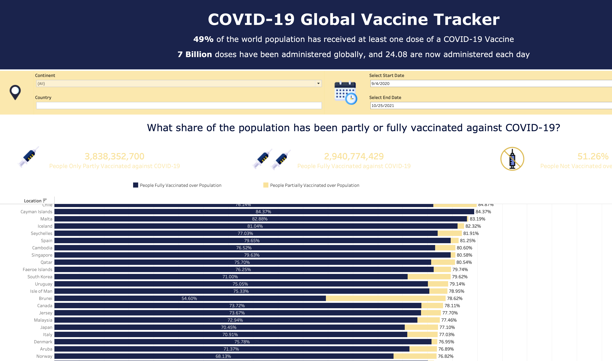

COVID-19: Case Analysis Dashboard Using Tableau
In this project, I created a dashboard in Tableau
to better understand how the COVID-19 pandemic and vaccinations has progressed
over the past couple of years.

I obtained the raw data through a public repository available on GitHub.
In addition to building the dashboard, a lot of data cleaning was performed through Excel Power Query and formulas.
This was one of my first projects I accomplished that made me fall in love with data science. I studied Health Science while in undergrad and my senior year was spent inside due to COVID-19. After seeing so many graphs and charts about COVID-19 on the news. I decided to learn how to make those charts. That is when I discovered data visualization and made me branch out from my healthcare background and lay the foundation for my data science career.